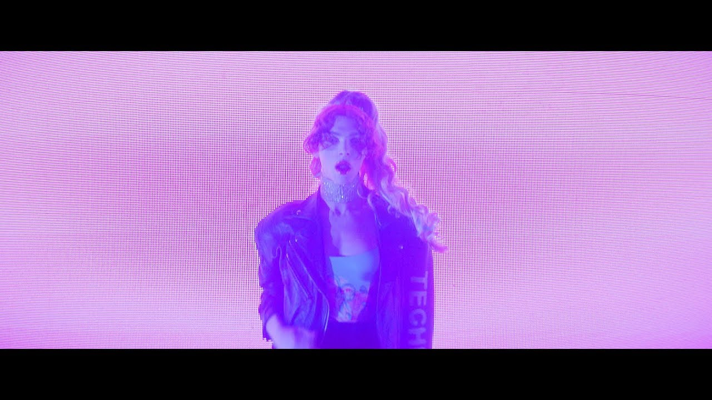

WATCH HERE
Background
In April 2017, an instrumental demo version of Ponyboy leaked online, subtitled Elephant. Prior to its release, it was performed by SOPHIE several times, most notably at her live “debut” in October. The single was premiered on Triple J on December 6th, 2017, and was released alongside a music video the next day. Most of the vocals on the track are performed by Mozart’s Sister, under the pseudonym Cécile Believe, who is also credited as a co-writer of the song. The song is bold and brash, featuring squelching bass and metallic percussion, two features that would become staples of the Oil Of Every Pearl's Un-Insides era.
SOPHIE about the title of the track:
"Well, it was a range of things actually. I heard it from a friend of mine who told me about a group of people where he grew up in Detroit who called themselves Pony Boys that souped up Nitro cars. Those are particularly a role in some sexual deviance dynamics as well. I was interested in them because it was a kind of short narrative and also the sounds I was trying to make it sound like. A mechanical pony is in-between an animal and a car, and it’s like bodily temptation, things like that. Somewhere in that world, which is really one of the central things for what the record seems to be like."
SOPHIE about the track:
"It's a playful song, but it's a bit hard. It's bodily and sexual. It also plays a bit with characters in the same way that you might do in certain sexual dynamics. I wanted to give it that feeling to people."
The video for the song features SOPHIE dancing with performance duo FlucT, in front of a flashing screen displaying the song's lyrics.